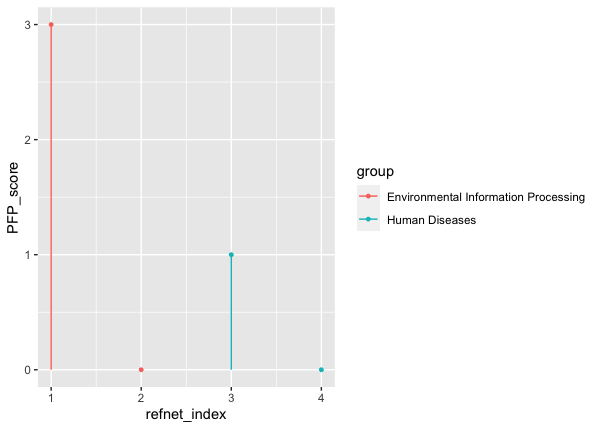

Pathway fingerprint: a tool for biomarker discovery based on gene expression data and pathway knowledge in R
Source:vignettes/PFP.Rmd
PFP.RmdIntroduction
Recent network fingerprint method based on GO knowledge and propagation clustering mentioned provide a novel representation of network differentiation known as biological spectra, or Network Fingerprint. This method was used to describe the relationship between multiple disease networks and its related pathways, and to visually compare and parse different diseases by generating a fingerprint overlay. To give a quantitative comparison of the mixed disease network, we achieve the function of complex network comparison based on pathway on the open scientific computing platform R, and present PFP package for fingerprint-based pathway analyzing and comparison of systems. Driven by the research needs of customers, PFP provides a unified interface to three similarity clustering algorithms. In addition, PFP can also provide multiscale statistical analysis and visualization, access to the specific attributes of different disease fingerprint.
This manual is a brief introduction to structure, functions and usage of PFP package. The PFP package provides a set of functions to support knowledge-based network fingerprint (PFP) framework. A biomedical network is characterized as a spectrum-like vector called “network fingerprint”, which contains similarities to basic reference networks. This framework provides a more intuitive way to decipher molecular networks, especially for large-scale network comparisons and clustering analyses.
The three main features of PFP:
- Basic reference networks generation.
- Network comparison, which encompasses network merging, annotation and similarity scoring.
- Network standardization.
Installation
PFP requires these packages: magrittr, igraph, plyr, ggplot2, apcluster, dplyr, stringr, graph and KEGGgraph. To install PFP, please note especially two depencies of PFP, graph and KEGGgraph are only available from Bioconductor. Appanrantly, function install.packages()can not insall Biocondutor packages. There is a biocLite(), a wrapper around install.packages() provided by Bioconductor, can be used to install both CRAN and Bioconductor packages simply.
## install release version of PFP source("http://bioconductor.org/biocLite.R") biocLite(c("graph", "KEGGgraph")) install.packages("PFP")
It also allows users to install the latest development version from github, which requires devtools package has been installed on your system or can be installed using install.packages("devtools"). Note that devtools sometimes needs some extra non-R software on your system – more specifically, an Rtools download for Windows or Xcode for OS X. There’s more information about devtools here.
## install PFP from github, require biocondutor dependencies ## package pre-installed if (!require(devtools)) install.packages("devtools") devtools::install_github("AIB-KQC/PFP")
After installation, the *{PFP} is ready to load into the current workspace by the following codes to the current workspace by typing or pasting the following codes:
Analysis Pipeline: from Basic Reference Network Generation to Network
Networkfingerprint Visualization
We will demonstrate go through an analysis pipeline to illustrate some of the main functions in PFP. This pipeline consists of several steps:
- Basic Reference Network Generation: prepare the well-known biomedical netowks as the PFP framework reference networks. Several pathway databases have been developed for biological network research, e.g. KEGG, Reactome - (https://reactome.org). All of this pathway databases is well-stuied and can be used as the basic reference networks of PFP.
- Network fingerprint calculation: The similarity between two biomedical networks is calculated based on the following intition: grouping the nodes in the merged network into strongly inter-connected communities with high functional similarity score between intra-community nodes in different networks The functional similarity was measured based on GO [@ashburner2000gene]. And we employed affinity propagation (AP) [@frey2007clustering] clustering algorithm to detect the aligned functional modules between the two networks to be compared.
- Network fingerprint Visualization: Show the network fingerprint along all the reference networks. We could observe the differences among biological networks fingerprint intuitively from visualization.
Generating well-studied basic reference networks
The basic idea of calculating the network fingerprint is to have the biomedical networks map to well-studied basic networks. KEGG PATHWAY is a collection of manually drawn pathway maps representing our knowledge on the molecular interaction and reaction networks. Since its first introduction in 1995, KEGG PATHWAY has been widely used as a reference knowledge base for understanding biological pathways and functions of cellular processes. The knowledge from KEGG has proven of great value by numerous work in a wide range of fields [@kanehisa2007kegg]. So by default, we take KEGG pathways as basic reference networks in PFP by default.
Function load_KEGG_refnet() can be used to retrieve the KEGG pathway maps with KEGG API http://www.kegg.jp/kegg/rest/keggapi.html. In KEGG pathways, only the pathways of the map are manual drawing, and to different organisms, the map reference helps the automatic generation of organism-specific pathway for each organism. The organism (e.g. organsim ="hsa") parameter indicate the organism name of KEGG pathway maps.
We defined a new S4 class PFPrefnet to store the PFP reference networks. PFP also provides five kinds of methods for this S4 class:
-
net(): Exact the basic reference networks ofPFPRefnet. -
group(): Obtain the group information, group names, number and the size of each group,e.g. KEGG pathway database contains seven group pathway maps. -
subnet(): Extract or replace parts of the PFP basic reference networks. -
show(): Display ofPFPRefnet. -
name(): Extract the names of reference networks.
Detailed instructions for this five methods refer to package function help.
Obviously users can also customize a PFPRefnet as a reference for computing network fingerprint. Users can refer to the documents of PFPRefnet about the composition details of this class. graphite [@sales2012g] allow users to build graphNEL object from several pathway databases.
## Reactome human pathway maps ## just choose first two pathway maps for testing
Then users can create their own customized object as following:
## here, just take the above two reactome pathway maps as PFP ## basic reference networks as example ## only one group and two reference networks ## methods of PFPRefnet
Network fingerprint calculation
PFP algorithm consists of three steps: merging network, nodes clustering and similarity scoring.
Network merging. The two networks to be compared are first merged into one. Given two networks G1 and G2, the merged network Gm is constructed by connecting each node between the G1 and G2 network. Two nodes corresponding to the same protein in the merged network are replaced by a single node that inherited all the interactions from the two individual nodes in the subsequent process.
Clustering in merged network. Grouping the nodes in the merged network into strongly inter-connected communities with high functional similarity score between intra-community nodes in different networks. We employed affinity propagation (AP) clustering algorithm to detect the aligned functional modules between the two networks to be compared. The nodes are grouped on the cluster based on nearest neighbor analysis.
Similarity scoring. The calculation of similarity score is processed in two steps: First, local similarity for each cluster and network similarity among cluster. Second, standardization: the original similarity score depends on the topological properties of query network to some extent. There is implicit bias of network fingerprint, because the outliers could be greatly distorted the relevant pattern presented in the network fingerprint. In order to eliminate the possible topological weight differences, the similarity calculation process of each node are standardized processing and the final network fingerprint facing to users is totally standardized. The standardization process is based on the random distribution of similarity scores. To the number of nodes, the number of edges and node degree, these three topological properties of random network for standardized estimate are consistent with the original network.
To not affect the results of standardization and improve the efficiency of fingerprint calculation, we set limit on the permutation time (the default is 100) of background network randomization in the standardization process. Users can also adjust randomization time of background network according to their own demands for the precision of network fingerprint.
PFP provides the calc_sim_score() function for calculating the similarity score between two networks. As the similarity score is subjected to the size of the network, we use the maslov’s method [@maslov2002specificity] to randomize a network while preserving the degree distribution. The nperm parameter is added to calc_sim_score() refers to the permutation times (the default is 100) of random network while calculating the similarity score mentioned above. We define a S4 class PFP in our package to store the calculation results of network fingerprints.
Simply, we choose the two pathway maps g as a query network, and a subset networks of kegg_refnet as the reference networks. Then the PFP can be calculated as following:
Network fingerprint visualization
PFP provides the plot_PFP() function to visualize the network fingerprint of a single query network.
knitr::include_graphics("000001.png")

plot_PFP(PFP_test)
knitr::include_graphics("000002.png")

The version number of R and packages loaded for generating the vignette were:
knitr::include_graphics("000003.png")

Session Information
The version number of R and packages loaded for generating the vignette were:
#> R version 4.0.2 (2020-06-22)
#> Platform: x86_64-apple-darwin17.0 (64-bit)
#> Running under: macOS Catalina 10.15.6
#>
#> Matrix products: default
#> BLAS: /Library/Frameworks/R.framework/Versions/4.0/Resources/lib/libRblas.dylib
#> LAPACK: /Library/Frameworks/R.framework/Versions/4.0/Resources/lib/libRlapack.dylib
#>
#> locale:
#> [1] en_US.UTF-8/en_US.UTF-8/en_US.UTF-8/C/en_US.UTF-8/en_US.UTF-8
#>
#> attached base packages:
#> [1] stats graphics grDevices utils datasets methods base
#>
#> other attached packages:
#> [1] PFP_0.99.1
#>
#> loaded via a namespace (and not attached):
#> [1] BioNet_1.47.0 bitops_1.0-6 fs_1.5.0
#> [4] enrichplot_1.9.3 bit64_4.0.5 RColorBrewer_1.1-2
#> [7] rprojroot_1.3-2 tools_4.0.2 backports_1.1.10
#> [10] R6_2.4.1 DBI_1.1.0 BiocGenerics_0.35.4
#> [13] colorspace_1.4-1 tidyselect_1.1.0 gridExtra_2.3
#> [16] bit_4.0.4 compiler_4.0.2 textshaping_0.1.2
#> [19] graph_1.67.1 Biobase_2.49.1 formatR_1.7
#> [22] scatterpie_0.1.5 desc_1.2.0 shadowtext_0.0.7
#> [25] KEGGgraph_1.49.1 scales_1.1.1 ggridges_0.5.2
#> [28] pkgdown_1.6.1 systemfonts_0.3.2 stringr_1.4.0
#> [31] digest_0.6.25 rmarkdown_2.3 DOSE_3.15.1
#> [34] pkgconfig_2.0.3 htmltools_0.5.0 rlang_0.4.8
#> [37] rstudioapi_0.11 RSQLite_2.2.0 gridGraphics_0.5-0
#> [40] generics_0.0.2 farver_2.0.3 BiocParallel_1.23.2
#> [43] GOSemSim_2.15.2 dplyr_1.0.2 RCurl_1.98-1.2
#> [46] magrittr_1.5 ggplotify_0.0.5 GO.db_3.11.4
#> [49] Matrix_1.2-18 Rcpp_1.0.5 munsell_0.5.0
#> [52] S4Vectors_0.27.13 ggnewscale_0.4.3 viridis_0.5.1
#> [55] lifecycle_0.2.0 stringi_1.5.3 yaml_2.2.1
#> [58] ggraph_2.0.3 MASS_7.3-53 plyr_1.8.6
#> [61] qvalue_2.21.0 grid_4.0.2 blob_1.2.1
#> [64] parallel_4.0.2 ggrepel_0.8.2 DO.db_2.9
#> [67] crayon_1.3.4 lattice_0.20-41 graphlayouts_0.7.0
#> [70] cowplot_1.1.0 splines_4.0.2 knitr_1.30
#> [73] pillar_1.4.6 fgsea_1.15.2 igraph_1.2.5
#> [76] reshape2_1.4.4 stats4_4.0.2 fastmatch_1.1-0
#> [79] XML_3.99-0.5 glue_1.4.2 evaluate_0.14
#> [82] downloader_0.4 BiocManager_1.30.10 data.table_1.13.0
#> [85] png_0.1-7 vctrs_0.3.4 tweenr_1.0.1
#> [88] gtable_0.3.0 purrr_0.3.4 polyclip_1.10-0
#> [91] tidyr_1.1.2 assertthat_0.2.1 ggplot2_3.3.2
#> [94] xfun_0.17 ggforce_0.3.2 tidygraph_1.2.0
#> [97] ragg_0.4.0 viridisLite_0.3.0 tibble_3.0.4
#> [100] rvcheck_0.1.8 clusterProfiler_3.17.3 AnnotationDbi_1.51.3
#> [103] memoise_1.1.0 IRanges_2.23.10 ellipsis_0.3.1